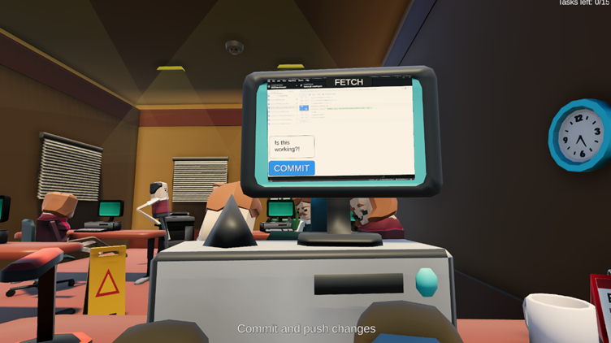

XAMK Game Jam II.
Project description
The game was made as part of Xamk Game Jam II 2022, which was organized from 25 November to 27 November 2022. The team included Tarita Karhulahti, Riku Heino and Harto Kuukka and we had 48 hours’ time to create a game that fit the predetermined theme. The theme of these game jams was "willpower". On the first day we started planning our game and we ended up with CODE COMMIT COFFEE PROFIT where the player trying to survive the whole weekend of game jam and not to destroy the computer. Player has MIKÄ OLI AIKA PELISSÄ minutes to complete all task before time runs out and keep willpower level low or otherwise the game ends. The goal of the game is to survive for a game jam and complete all task before time runs out. When the plan was completed then we shared the work tasks to everyone. My task was to program the movement for the character head, events, and I made the main menu. On Friday, we planned the game, and little bit started to make the game, and on Saturday the work continued. On Sunday, we made small additions, fine-tuned the game, and assembled the game.

Description of the task
My task in the team was to program the game. I was responsible for making the UI, events for the game and the movement for the character. After I got my tasks done, I started helping with the animation. I made the movement for the characters when character grab a coffee cup and drink it. I also added music and sound effects to the project.
Description of methods
In the game, the player moves the characters head with mouse and fixes the problems that emerges in the game. There were four types of events, which were GIT hub, code writing, coffee drinking and MIKÄ OLI VIMPPO EVENTTI. In the GIT hub, the player has to tap left mouse button on commit and then push. Writing a code, the player has to tap a tab. When the eyes get fussy, the player needs to drink a coffee, player has to click left mouse button a cup. The most important thing in the game is to survive the game jam, complete all task before time runs out and put your willpower level low enough not to brake computer.
code {
using UnityEngine;
public class RotateCamera : MonoBehaviour
{
public float speedH = 2.0f;
public float speedV = 3.0f;
public Vector3 min;
public Vector3 max;
private float yaw = 2.0f;
private float pitch = 2.0f;
void Update()
{
MouseRotate();
}
private void MouseRotate()
{
yaw += speedH * Input.GetAxis("Mouse X");
pitch -= speedV * Input.GetAxis("Mouse Y");
//Min max for horizontal
yaw = Mathf.Clamp(yaw, 120f, 240f);
//Min max for vertical
pitch = Mathf.Clamp(pitch, -20f, 40f);
transform.eulerAngles = new Vector3(pitch, yaw, 0.0f);
}
}
}
From the code above, you can see the character head movement in the game.
Problems and solutions
My biggest problem was merge conflicts because we touched same base classes, same scene and same prefabs. We resolve merge conflicts together by choosing with changes we take and which we redo.
Final assessment
I'm really happy how functional and funny game we made during the game jam. I enjoy being involved in planning of the game and programming it. I learned a lot of new things from the team members.